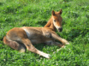
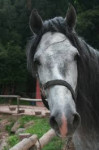
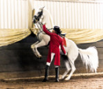

Marawari horses are a desert breed with curved ears.
Mustangs are sturdy horses that come in many colors.
Quater horses are a strong breed that were used to herd cattle.
Andalusions are a spanish breed of horse that were used to herd the spanish bulls.
Lippizaners are strong horses that are used in the Spaninsh riding school. They are white or bay, which is much rarer.